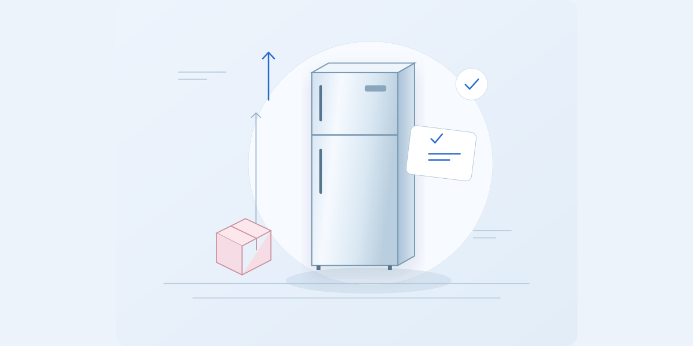
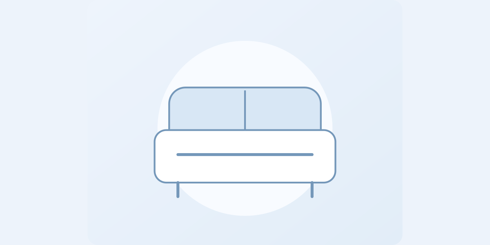
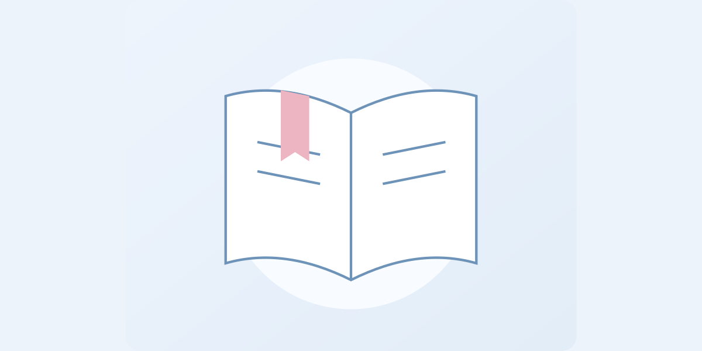
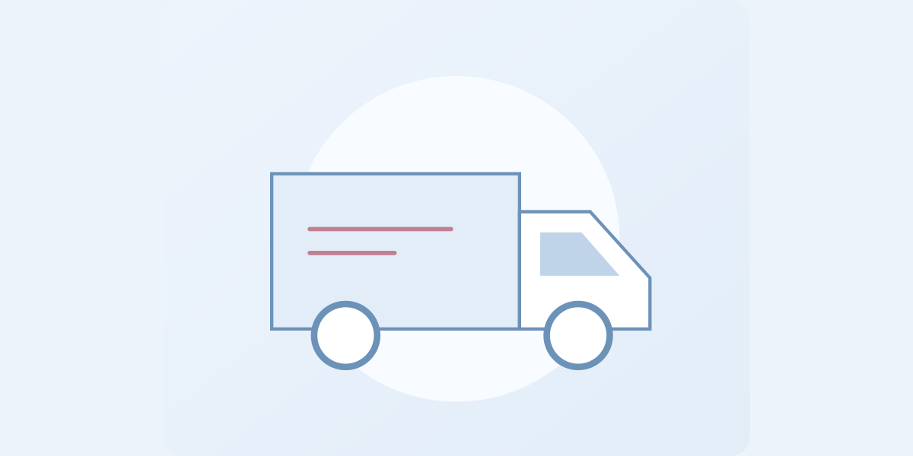

Начните с этогоКак перевезти холодильник без лишнего риска
Подготовка, положение в машине и первое включение — по шагам.
Читать инструкциюПрактика РейтингРу
Понятные инструкции, схемы и памятки.
Что проверить — и как действовать,
когда важны детали.

Начните с этогоПодготовка, положение в машине и первое включение — по шагам.
Читать инструкциюПолезные материалы
Подготовка, положение в машине и первое включение — по шагам.
7 минут на чтениеЧто подготовить и как разделить хрупкие вещи по коробкам.
Материал ещё не подготовленКакие работы уточнить до того, как машина приедет.
Материал ещё не подготовлен
Размеры, повороты и узкие места на пути к квартире.
Материал ещё не подготовлен
Практика, договор и дополнительные платежи.
Материал ещё не подготовленО чём договориться с клинингом заранее.
Материал ещё не подготовленОбъём работ, сроки и ответственность сторон.
Материал ещё не подготовлен
Что измерить и сообщить перевозчику.
Материал ещё не подготовленДокументы, одежда и вопросы до начала практики.
Материал ещё не подготовленПлан помещения, коммуникации и расстояния для открывания.
Материал ещё не подготовленОдин список требований вместо сравнения несопоставимых цен.
Материал ещё не подготовленКомнаты, приоритеты и вещи для первого вечера.
Материал ещё не подготовленПопробуйте другое слово или покажите все материалы.
Хороший вопрос — начало инструкции
Подскажите, какой инструкции не хватает.
Ваш вопрос поможет выбрать следующую тему.